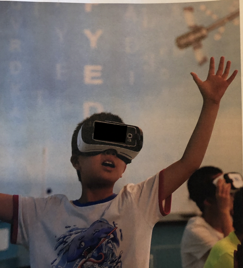
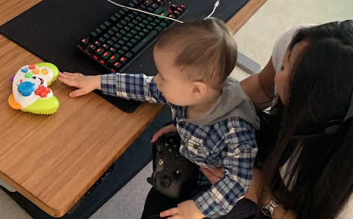
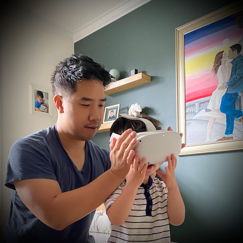

Center for Interdisciplinary Brain Sciences Research (CIBSR) NIH T32 Training Fellow
Program in Interdisciplinary Education Research (PIER) Fellow
Center for the Neural Basis of Cognition (CNBC) Fellow
Email: cassie24@stanford.edu
Program in Interdisciplinary Education Research (PIER) Fellow
Center for the Neural Basis of Cognition (CNBC) Fellow
Email: cassie24@stanford.edu

My mission statement is to design educational materials and interventions to meet the needs of diverse learners and optimize learning outcomes. Specifically, my research focuses on developing technology-enhanced tools that are especially useful for children with less developed attention regulation and for low-income youth.
Key Research Questions
How can we utilize physiological and imaging techniques such as eye-tracking and noninvasive
functional near-infrared spectroscopy (fNIRS) to investigate underlying cognitive processes in
immersive learning contexts?


!real human brain!
How can we apply learning theories in developmental and cognitive psychology to enrich the experiences people have with technology and educational media?
As the use of digital games in childhood vastly increases, research on the best design practices is needed.



Photos Courtesy of the Cutest Nephew in the World